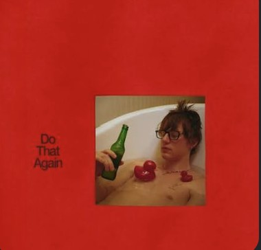
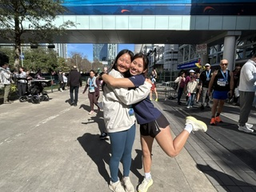
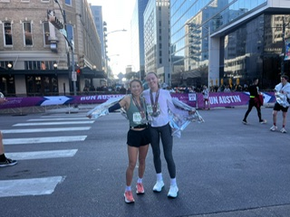
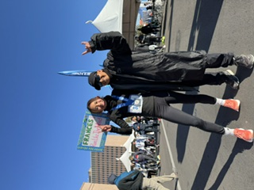
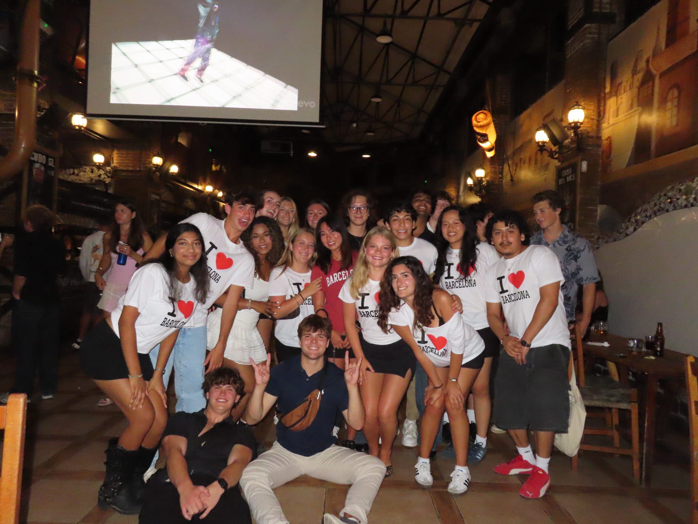

Vivaldi Four Seasons
July 17, 2026
While Andrew came to visit me, we planned on going to a Four seasons orchestra concert and so to prepare for it, I'd been studying up

Do That Again — Malcolm Todd
June 5, 2026
As an og Malcom Todd fan, I had very high hopes for this album. Upon first listen, it wasn't my favorite but I think the more I listen to it, the more it grows on me.
Race log
| Race | Date | Distance |
|---|---|---|
| Houston Marathon | Jan 11, 2026 | 26.2 mi |
| Austin Half Marathon | Feb 16, 2025 | 13.1 mi |
| Austin International Half Marathon | Jan 11, 2025 | 13.1 mi |
| 3 races | 52.4 mi |
Current goal
Build back running base
Since August 2026
I've just got back from studying abroad in Barcelona and despite having a really enjoyable time, staying in a different country with a spontaneous itinerary made it difficult to maintain a regular running schedule. I don't have any races planned for 2026-2027, but I want to spend these next couple months building back my running base and working back to 20-25 miles a week. I want to do it out of the love for running rather than viewing it as a chore.
Races
Houston Marathon
January 11, 2026
I just ran my first full marathon. I found training for this race harder than the actual race itself. Jugging high mileage while being in school was super challenging and I probably would not do another full marathon whie being in school, but I am still glad I was able to accomplish this goal. It also feels nice to cross off a New Years Resolution so early on into 2026.

Austin Half Marathon
February 16, 2025
Vibes were awesome with this race, I got to run the fastest time for my gender and age group while running with my amazing running companion, Anna who I met through Texas Run Club, (the run club at UT Austin). I remember leading up to the race we were discussing how we wanted to run this race, and since it was Anna's first half marathon, we had agreed on running on "vibes" and just seeing where the race would take us. Never in my life would I have thought that we would place first and second in our division after agreeing that we wanted to take the race "chill". What a privilege to have this body and the friends to do the things I love.

Austin International Half Marathon
January 11, 2025
I just ran a super hot PR in the half marathon. This was probably my best race ever. I felt like training for this was super fun and challenging at the same time, but it was super satisfying to see the miles in training pay off mile by mile in the race. I remember crying because I was so happy to hit this PB, and I had exceeded my own race predictions.

Currently learning
Learning Astro
Started July 2026
Building my new personal website with Astro. Really enjoying the static-first approach and markdown content collections.
Do a frogstand
Started July 2026
I want to learn this yoga pose.
Learn all the countries in the world
Started June 2026
I so far have a good grasp on North, South, and Central America. Europe and most of Asia is decently mastered. The hardest hurdle has been Africa.
Create a capsule wardrobe
Started June 2026
I want to buy items with the intention of consuming less.
Learned
Learned how to French braid my hair
May 2026
I grew up never knowing how to braid my own hair since my mom always did it for me. It was only once i studied abroad in Valencia and I did not have my mother's skilled hands at my disposal was I forced to teach myself. Level of difficulty: Easy.
Been to
Study Abroad in Spain
May 2026 – August 2026

So privileged to get to spend a summer in Spain! Summer of 2026 I spent a month taking engineering design in Valencia and then I moved up the east coast of Spain to Barcelona where I took engineering dynamics while simultaneously completing an internship. I had such an amazing experience meeting so many new friends, exploring Europe, and living in Spain for three months.
Study Abroad in Copenhagen, Denmark
May 2025
My first taste of being away from Austin for longer than two weeks was a Mayterm in Copenhagen, Denmark. I'm so lucky to have experienced hygge, lounged in Kongens Have (King's Garden) after class, seen amazing artwork at the SMK (the National Gallery of Denmark), run past Amalienborg, and made new engineering friends. I'm also a big fan of the metro.
Want to go
Taiwan Grad Trip
After graduation
After watching a multitude of Doobydobap videos on youtube and seeing content creator Tina travel around Taipei and eating her way through the vibrant city with her boyfriend, Kevin, I've set my sights on Taiwan as a cool destination to travel to once I finish up undergrad.